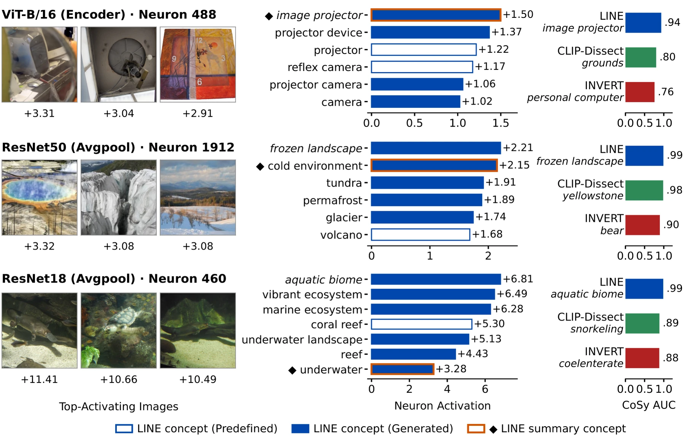
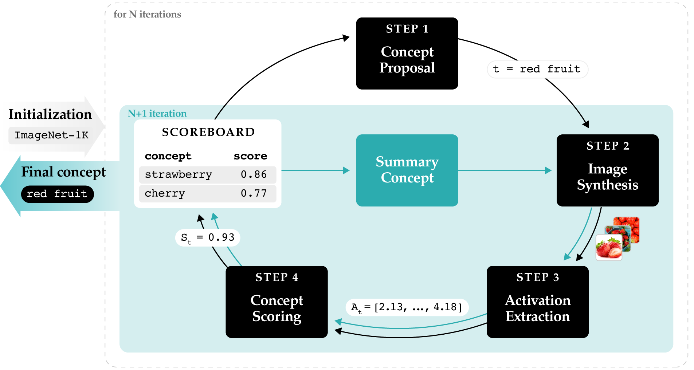

Abstract
Interpreting the concepts encoded by individual neurons in deep neural networks is a crucial step towards understanding their complex decision-making processes and ensuring AI safety. Despite recent progress in neuron labeling, existing methods often limit the search space to predefined concept vocabularies or produce overly specific descriptions that fail to capture higher-order, global concepts. We introduce LINE, a novel, training-free iterative approach tailored for open-vocabulary concept labeling in vision models. Operating in a strictly gray-box setting, LINE leverages a large language model and a text-to-image generator to iteratively propose and refine concepts in a closed loop, guided by activation history. We demonstrate that LINE achieves state-of-the-art performance across multiple model architectures, yielding AUC improvements of up to 0.15 on ImageNet and 0.05 on Places365, while discovering, on average, 25% of new concepts missed by predefined vocabularies. Beyond identifying the top concept, LINE provides a complete generation history, enabling polysemanticity evaluation and producing supporting visual explanations that rival gradient-dependent activation maximization methods.
How LINE works
LINE is an automatic, training-free, gray-box framework for labeling vision model neurons: it requires only access to
the inspected neuron's activations, without access to the model weights or gradients. Following an initialization phase
that creates a concept scoreboard H, each iteration proceeds through four stages, adding a newly
evaluated concept to the scoreboard.

-
Step 1
Concept proposal
An LLM proposes a new concept
tbased on the descriptions from the scoreboardH(e.g., generalizing strawberry and cherry into red fruit). -
Step 2
Image synthesis
A text-to-image (T2I) model generates a batch of diverse synthetic images illustrating the concept
t. -
Step 3
Activation extraction
These images are processed by the target vision model, extracting concept activations
At. -
Step 4
Concept scoring
A scoring function (the mean activation,
ψavg) convertsAtinto scorest, andHis updated with the result.
Initialization. The scoreboard is initialized with ImageNet-1K class labels, a diverse vocabulary that closely
resembles the target model's training distribution. To balance exploitation and exploration, it is populated with the
top 5 highest-scoring class labels (scored on 50 natural images per class) alongside 5 randomly selected ones,
and their scores are calculated on synthesized images to ensure consistency with the iterative process.
Summary step. After N iterations, the LLM is provided with the top three concepts from the scoreboard
to generate a generalized, higher-order concept, which is evaluated via the standard pipeline. The highest-scoring concept
from H is then returned, together with the complete generation history.
LINE uses Llama 3.1 8B, Stable Diffusion XL (SDXL) with 5 images generated per concept, and N = 10 refinement iterations.
Watch a search
Six neurons, one per model, replayed from the runs behind the released explanations. Press play or drag the slider: at each iteration the LLM proposes a new concept based on the scoreboard, SDXL synthesizes five images of it, and the mean activation of the neuron over them becomes the concept's score.
Same setting as the paper: Llama 3.1 8B, SDXL, 10 refinement iterations, 5 images per concept. The reasoning is the LLM's reasoning behind each new concept, logged during the run. Every other neuron's full history is in the explorer below.
Evaluation on the CoSy benchmark and VLM correlation
CoSy evaluates open-vocabulary textual explanations of neurons with synthetic data: if a concept label accurately explains a neuron, the neuron should activate significantly more on generated images of the concept than on a control set of random natural images. AUC is the probability that a synthetic concept image activates the neuron more strongly than a random control image; MAD is the difference in mean activations between the synthetic and control images, normalized by the control's standard deviation. Because both CoSy and LINE rely on T2I models, we additionally evaluate with simulation with correlation scoring (Corr), the Pearson correlation between neuron activations and SigLIP label-image similarities across the dataset, which uses no generated images.
| Model | Dataset | Metric | LINE | CLIP-Dissect | INVERT | DnD |
|---|---|---|---|---|---|---|
| ResNet18 | ImageNet | AUC | 0.97±0.04 | 0.90±0.14 | 0.85±0.14 | 0.77±0.21 |
| MAD | 4.76±1.91 | 3.42±2.17 | 2.16±1.61 | 1.97±1.99 | ||
| Corr | 0.57±0.49 | 0.41±0.39 | 0.47±0.45 | 0.44±0.46 | ||
| ResNet18 | Places365 | AUC | 0.93±0.10 | 0.89±0.15 | 0.80±0.18 | 0.85±0.19 |
| MAD | 3.77±2.31 | 3.63±2.78 | 1.85±1.70 | 3.16±2.92 | ||
| Corr | 0.51±0.54 | 0.29±0.43 | 0.20±0.33 | 0.64±0.58 | ||
| ResNet50 | ImageNet | AUC | 0.97±0.07 | 0.87±0.18 | 0.88±0.15 | 0.85±0.18 |
| MAD | 5.28±2.10 | 3.56±2.52 | 2.81±1.95 | 3.40±3.02 | ||
| Corr | 0.81±0.57 | 0.33±0.46 | 0.48±0.51 | 0.66±0.47 | ||
| ResNet50 | Places365 | AUC | 0.94±0.08 | 0.89±0.15 | 0.84±0.14 | 0.84±0.18 |
| MAD | 4.27±2.81 | 3.69±2.90 | 2.04±1.70 | 2.74±2.56 | ||
| Corr | 0.36±0.57 | 0.24±0.48 | 0.16±0.30 | 0.57±0.54 | ||
| ViT-B/16 | ImageNet | AUC | 0.94±0.07 | 0.74±0.20 | 0.79±0.18 | 0.64±0.20 |
| MAD | 2.12±0.54 | 1.00±0.89 | 1.05±0.70 | 0.60±0.84 | ||
| Corr | 0.26±0.21 | 0.07±0.15 | 0.23±0.21 | 0.07±0.15 | ||
| DINOv3 | LVD-1689M | AUC | 0.94±0.08 | 0.76±0.22 | 0.76±0.18 | 0.62±0.23 |
| MAD | 2.05±0.68 | 1.12±1.06 | 0.95±0.73 | 0.47±0.92 | ||
| Corr | 0.32±0.23 | 0.09±0.20 | 0.24±0.24 | 0.11±0.21 | ||
| Overall | – | AUC | 0.95±0.08 | 0.84±0.19 | 0.82±0.17 | 0.76±0.22 |
| MAD | 3.71±2.27 | 2.74±2.50 | 1.81±1.61 | 2.06±2.50 | ||
| Corr | 0.47±0.50 | 0.24±0.39 | 0.30±0.38 | 0.41±0.50 |
Table 1 of the paper. Layers: avgpool for ResNet50 and ResNet18, encoder for ViT-B/16 and norm for DINOv3.
DnD results on ViT-based models are affected by a bug in the original implementation (Appendix B.3).
The AUC, MAD and Corr of every neuron are in the released explanations.
Browse the explanations
Visual explanations without gradients
By coupling iterative concept search with image synthesis, LINE generates highly activating images that serve as visual explanations alongside textual descriptions. This enables direct comparison with activation maximization (AM) methods like DiffExplainer and DEXTER, which optimize the text prompts of diffusion models with gradients. Following the Salient ImageNet protocol, we show visual explanations of the top-5 features for six classes in a RobustResNet50: three classes relying mainly on core features (Jeep, Daisy, Rifle) and three classes containing heavily spurious features (Bathing Cap, Patio, Seat Belt). LINE shows the top-activating of its five images of the reported concept; the number under each image is the neuron activation, with the highest per feature in bold.
Contact
For questions about the paper or the code, write to Vladimir Zaigrajew (vladimir.zaigrajew.dokt@pw.edu.pl) or Paweł Gelar (pawel.gelar@pw.edu.pl). Bug reports and feature requests are welcome as GitHub issues.
Citation
@inproceedings{
anonymous2026line,
title={{LINE}: {LLM}-based Iterative Neuron Explanations for Vision Models},
author={Zaigrajew, Vladimir and Piechota, Micha{\l} and Sekula, Gaspar and Gelar, Pawe{\l} and Biecek, Przemys{\l}aw},
booktitle={The Fortieth Annual Conference on Neural Information Processing Systems},
year={2026},
url={https://openreview.net/forum?id=Cyqy5Yh0Ho}
}